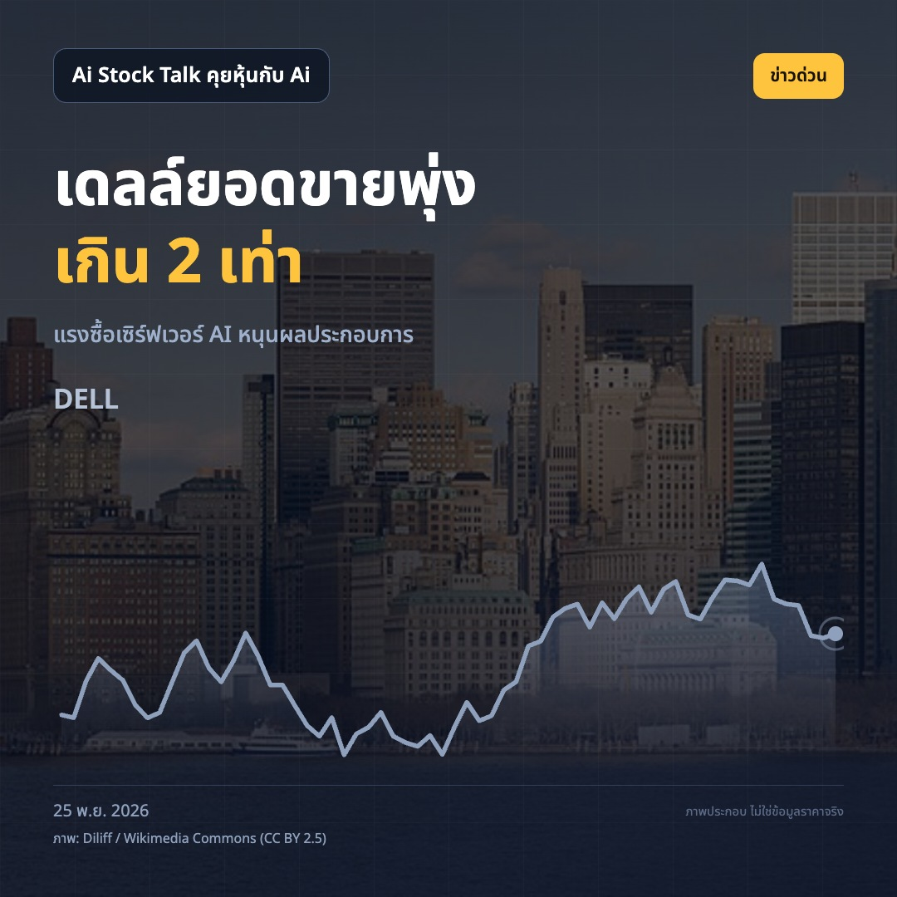
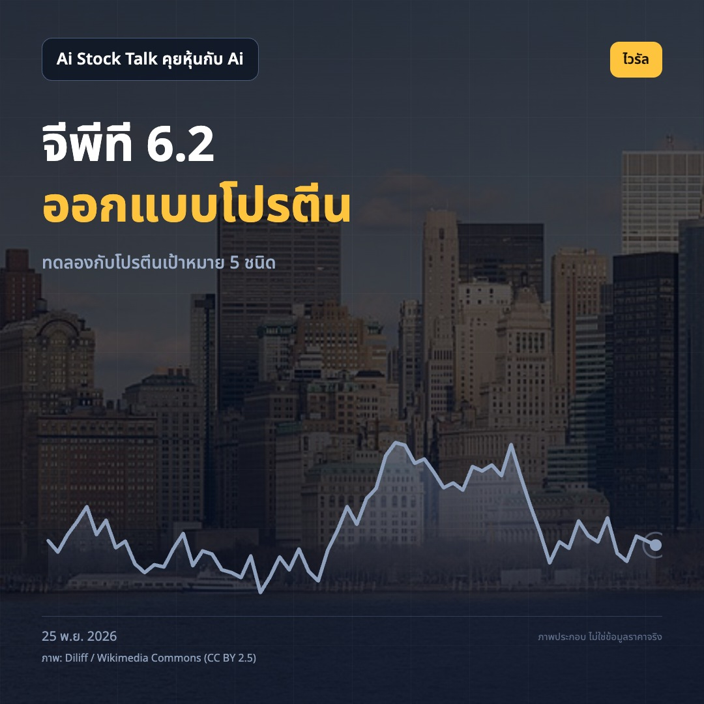

1. ยอดขายเดลล์โตเกินสองเท่า รับแรงซื้อเซิร์ฟเวอร์ AI

ยอดขายเดลล์โตเกิน 2 เท่า พร้อมซื้อหุ้นคืน 25,000 ล้านดอลลาร์
ยอดขายรวมในไตรมาสล่าสุดเพิ่มขึ้นมากกว่าสองเท่าจากปีก่อน โดยมีความต้องการเซิร์ฟเวอร์ AI เป็นแรงขับเคลื่อน หุ้นเดลล์ปรับขึ้นหลังรายงานผลประกอบการ และบริษัทอนุมัติวงเงินซื้อหุ้นคืน 25,000 ล้านดอลลาร์
ทำไมต้องสน: ตัวเลขนี้ทำให้นักลงทุนเห็นว่าการลงทุนด้าน AI ส่งผลถึงยอดขายของผู้ผลิตเซิร์ฟเวอร์แล้ว แต่ยังต้องติดตามว่าความต้องการจะต่อเนื่องเพียงใด
คุณมองว่ายอดขายเซิร์ฟเวอร์ที่พุ่งขึ้นครั้งนี้จะอยู่ได้นานแค่ไหน?
ที่มา: https://www.cnbc.com/2026/11/24/dell-earnings-report-q3-2027.html https://www.marketwatch.com/story/dells-stock-rises-as-the-ai-boom-helps-sales-more-than-double-cfb8cf65?mod=mw_rss_topstories
หุ้นเทค #หุ้นAI #เดลล์
ภาพ: Diliff / Wikimedia Commons (CC BY 2.5)
2. หุ้นแอนโทรปิกร่วงต่ำกว่าราคาไอพีโอ
ไม่ถึง 1 สัปดาห์ หุ้นแอนโทรปิกหลุดราคาไอพีโอ 83 ดอลลาร์
หุ้นแอนโทรปิกซื้อขายต่ำกว่าราคาเสนอขายครั้งแรกที่ 83 ดอลลาร์ เป็นครั้งแรกหลังเข้าตลาดแนสแด็กได้ไม่ถึงหนึ่งสัปดาห์ ข้อมูลที่ให้มายังไม่ระบุราคาหุ้นล่าสุดหรือขนาดการปรับลง จึงบอกไม่ได้ว่าหลุดไปมากเพียงใด
ทำไมต้องสน: คนที่ถือหุ้น AI ควรจับตาว่าตลาดให้มูลค่าบริษัทกลุ่มนี้อย่างไรหลังเริ่มซื้อขายจริง ราคาที่ต่ำกว่าจุดเสนอขายเป็นสัญญาณให้ทบทวนความคาดหวังต่อหุ้นใหม่
คุณให้ความสำคัญกับราคาไอพีโอแค่ไหนเวลาเลือกหุ้น AI?
ที่มา: https://www.marketwatch.com/story/anthropics-stock-just-broke-below-its-ipo-price-for-the-first-time-5dc82668?mod=mw_rss_topstories
หุ้นAI #แอนโทรปิก #ตลาดหุ้น
ภาพ: Diliff / Wikimedia Commons (CC BY 2.5)
3. ไมโครซอฟท์เร่งแก้ระบบหลังคลาวด์ล่มครั้งใหญ่
แก้ปัญหาใช้ 5–6 วัน ไมโครซอฟท์ตั้งเป้าเหลือ 1 ชั่วโมง
หลังเหตุขัดข้องวันที่ 12 พฤศจิกายน ผู้ใช้ทั่วโลกเข้าใช้งานเอ็กซ์เชนจ์ออนไลน์ ทีมส์ และเอาต์ลุกไม่ได้ บันทึกภายในที่สื่อรายงานระบุว่าไมโครซอฟท์ประกาศปรับวิธีรับมือเหตุขัดข้องครั้งใหญ่ ผู้บริหารยกตัวอย่างเหตุหนึ่งที่การส่งแก้ไขเร่งด่วนให้ครอบคลุมทั่วโลกใช้เวลา 5–6 วัน ขณะที่เป้าหมายสำหรับการแก้ปัญหาความปลอดภัยที่เร่งด่วนที่สุดคือ 1 ชั่วโมง
ทำไมต้องสน: ผู้ลงทุนในธุรกิจคลาวด์ต้องดูทั้งการเติบโตและความสามารถในการแก้ปัญหาเมื่อบริการหลักสะดุด
คุณคิดว่าความเร็วในการกู้ระบบควรมีน้ำหนักแค่ไหนเมื่อประเมินหุ้นคลาวด์?
ที่มา: https://arstechnica.com/gadgets/2026/11/microsofts-historic-cloud-outage-exposed-an-engineering-fog-of-war/
ไมโครซอฟท์ #คลาวด์ #หุ้นเทค
ภาพ: Diliff / Wikimedia Commons (CC BY 2.5)
4. โมเดล AI ช่วยออกแบบโครงสร้างโปรตีนเป้าหมาย

โปรตีนเป้าหมาย 5 ชนิด: งานทดลองใหม่ของจีพีที 6.2
ในการทดลองที่เผยแพร่ ผู้วิจัยให้จีพีที 6.2 ดูโครงสร้างสามมิติของโปรตีนเป้าหมาย 5 ชนิด และระบุตำแหน่งที่ต้องการให้โปรตีนขนาดเล็กเข้าไปจับ จากนั้นใช้โมเดลเฉพาะทางช่วยเสนอรหัสกรดอะมิโน และคัดเลือกตัวอย่างที่คาดว่าจะพับตัวและจับตำแหน่งตามต้องการ
ทำไมต้องสน: งานนี้แสดงบทบาทของ AI ทั่วไปในขั้นออกแบบ แต่ขั้นเปลี่ยนแบบให้เป็นโปรตีนสำหรับทดสอบยังพึ่งเครื่องมือเฉพาะทาง นักลงทุนด้าน AI และชีววิทยาควรแยกสองขั้นนี้ให้ชัด
คุณคิดว่า AI ทั่วไปจะช่วยงานวิจัยชีววิทยาได้มากที่สุดในขั้นตอนไหน?
ที่มา: https://openai.com/index/gpt-6-models-demonstrate-intrinsic-protein-design-capabilities/
AI #ชีววิทยา #เทคโนโลยี
ภาพ: Diliff / Wikimedia Commons (CC BY 2.5)
5. โมเดล 27 พันล้านพารามิเตอร์ทำงานบนเครื่องส่วนตัว
โมเดล 27B บนแมคมินิ: ผู้ใช้รายงานความเร็ว 22–25 โทเคนต่อวินาที
มีการเผยแพร่เทอร์นารีบอนไซ 2.5 ขนาด 27 พันล้านพารามิเตอร์ ผู้ใช้รายหนึ่งในชุมชนรายงานว่ารุ่นที่นำไปทดสอบทำงานบนแมคมินิรุ่นเอ็ม 5 โปร ซึ่งมีหน่วยความจำ 24 กิกะไบต์ ได้ราว 22–25 โทเคนต่อวินาที เขายังระบุว่าเปิดบริบทยาว 128,000 โทเคนในหน่วยความจำได้
ทำไมต้องสน: ผลทดสอบจากผู้ใช้รายเดียวชี้ให้เห็นความเป็นไปได้ของการใช้โมเดลขนาดใหญ่บนเครื่องส่วนตัว แต่ยังไม่ใช่หลักฐานว่างานทุกแบบจะได้ความเร็วเท่ากัน
คุณจะใช้โมเดล AI บนเครื่องตัวเองทำงานประเภทไหน?
ที่มา: https://prismml.com/news/bonsai-2-5-27b
AIบนเครื่อง #โมเดลภาษา #เทคโนโลยี
ภาพ: Diliff / Wikimedia Commons (CC BY 2.5)
6. ควอดไนน์ถอนบริการดีเอ็นเอสจากฝรั่งเศส
24 พฤศจิกายน: ควอดไนน์ถอนบริการดีเอ็นเอสจากฝรั่งเศส
ควอดไนน์ประกาศถอนบริการดีเอ็นเอสในฝรั่งเศส ความเห็นจากผู้ใช้ในรายการข่าวระบุว่าการเปลี่ยนแปลงมีผลแล้วเมื่อวันที่ 24 พฤศจิกายน และยกตัวอย่างการตรวจสอบผ่านที่อยู่บริการ 9.9.9.9 ข้อมูลที่ให้มายังไม่ระบุว่าผู้ใช้ทั้งหมดได้รับผลอย่างไร
ทำไมต้องสน: ดีเอ็นเอสเป็นส่วนหนึ่งของการเข้าถึงเว็บไซต์และบริการออนไลน์ ข่าวนี้จึงควรติดตามในมุมความพร้อมใช้งานของโครงสร้างพื้นฐานอินเทอร์เน็ต โดยเฉพาะธุรกิจที่ต้องพึ่งบริการออนไลน์ข้ามประเทศ
คุณเคยเปลี่ยนบริการดีเอ็นเอสที่ใช้อยู่หรือไม่ และเปลี่ยนเพราะอะไร?
ที่มา: https://quad9.net/news/blog/quad9-service-deactivation-in-france/
อินเทอร์เน็ต #ความปลอดภัยไซเบอร์ #เทคโนโลยี
ภาพ: Diliff / Wikimedia Commons (CC BY 2.5)